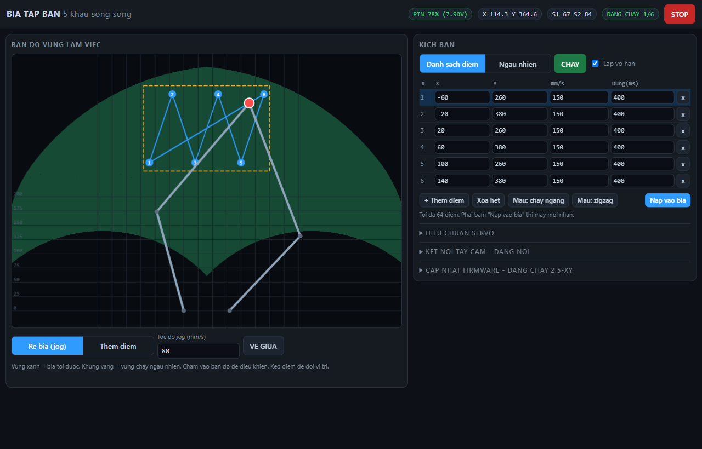
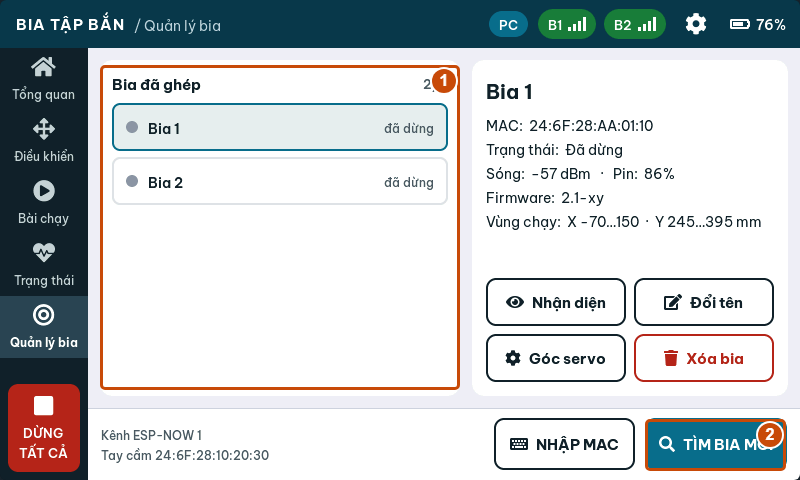
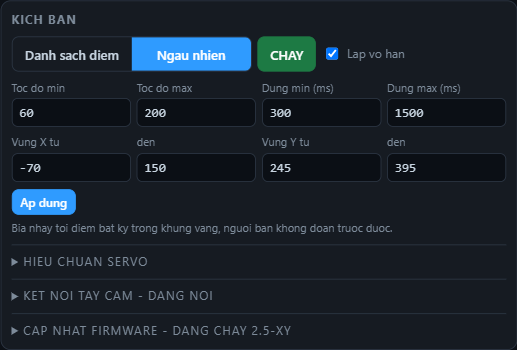
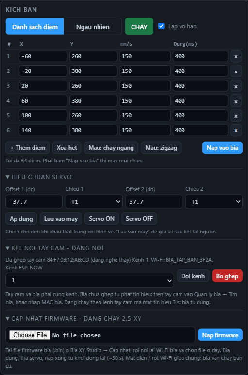
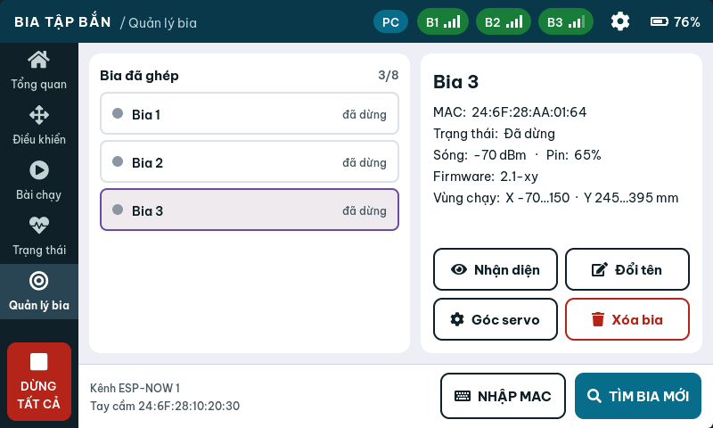

KHAI THÁC
Số đăng ký tài liệu:
RA KHỎI ĐƠN VỊ
Quy định sử dụng tài liệu
- Sổ tay dùng để huấn luyện, vận hành, bảo quản và bảo dưỡng hệ thống bia di động XY. Người vận hành phải đọc Phần Tóm tắt an toàn và Chương 3 trước khi tham gia buổi tập.
- Tài liệu lưu hành nội bộ đơn vị. Việc sao chụp, chuyển giao do người phụ trách trang bị quyết định; ghi vào Bảng ghi sửa đổi khi bổ sung.
- Các quy định của sổ tay không thay thế quy tắc an toàn trường bắn, điều lệnh và chỉ thị huấn luyện hiện hành của đơn vị. Khi có khác biệt, áp dụng quy định chặt chẽ hơn.
- Nội dung đối chiếu với firmware bia 2.5-xy, tay cầm 1.2.0. Phiên bản khác có thể khác tên nút hoặc giới hạn; kiểm tra phiên bản trước khi huấn luyện (Chương 9).
- Hệ thống không có cảm biến ghi nhận phát trúng. Kết quả bắn được đánh giá bằng kiểm tra tấm bia sau khẩu lệnh KHÁM BIA.
Bảng ghi sửa đổi
| Lần | Ngày | Nội dung sửa đổi, bổ sung | Người sửa / ký |
|---|---|---|---|
| 1 | 26/10/2026 | Xuất bản lần thứ nhất (bia 2.5-xy, tay cầm 1.2.0) | Trần Nguyên Bình |
Ký hiệu cảnh báo trong tài liệu
Sổ tay dùng bốn mức cảnh báo theo thứ tự nghiêm trọng giảm dần. Nội dung trong khung phải đọc và tuân thủ trước khi làm bước liền sau.
Tình huống chắc chắn gây chết người hoặc thương tích nặng nếu không tránh.
Tình huống có thể gây thương tích cho người.
Tình huống có thể làm hỏng trang bị, mất dữ liệu hoặc làm hỏng buổi tập.
Thông tin bổ sung giúp thao tác đúng và nhanh hơn.
Tên nút in kiểu DỪNG TẤT CẢ; nhãn web bia ghi không dấu như trên màn hình (STOP). Khẩu lệnh in hoa đậm: “NGỪNG BẮN!”. Đơn vị: mm, mm/s, ms (1000 ms = 1 giây).
Tóm tắt an toàn
Không bao giờ vào khu vực bia khi chưa có khẩu lệnh “NGỪNG BẮN!” và chưa được chỉ huy cho phép KHÁM BIA. Bia đứng yên không có nghĩa là trường bắn an toàn.
Mười điều an toàn khi khai thác bia XY
| TT | Quy định |
|---|---|
| 1 | Chỉ bắn vào tấm bia. Cơ cấu, servo, mạch điều khiển và pin phải nằm sau vật che chắn đạt yêu cầu của trường bắn. Loại đạn, cự ly, góc bắn theo quy định bài bắn và trường bắn của đơn vị. |
| 2 | Mỗi buổi tập có một người điều khiển bia (NĐK) duy nhất, đứng ngoài hướng bắn, nhìn thấy toàn bộ dãy bia và nghe được khẩu lệnh của chỉ huy. |
| 3 | NĐK luôn đặt tay ở nút DỪNG TẤT CẢ (tay cầm) hoặc STOP (web bia) khi bia đang chạy. Khẩu lệnh “NGỪNG BẮN!” đồng nghĩa với dừng toàn bộ bia. |
| 4 | Bất kỳ người nào phát hiện nguy hiểm đều được hô “NGỪNG BẮN!”. Mọi người lập tức ngừng bắn, khóa an toàn, NĐK dừng bia. |
| 5 | Trước khi khám bia, thay tấm bia hoặc chạm vào cơ cấu: dừng bia, bấm Servo OFF (web bia, mục Hieu chuan servo) hoặc tắt nguồn bia. Servo đang GIỮ có thể quay mạnh khi có lệnh. |
| 6 | Bia chạy tới khoảng 850 mm/s và đổi hướng bất ngờ ở chế độ Ngẫu nhiên. Không để tay, dây, cành cây trong vùng quét của khâu. |
| 7 | Mất liên lạc tay cầm quá 3 giây khi đang chạy theo tay cầm, bia tự dừng. Mất kết nối web không tự dừng bia. Luôn quan sát bia thật, không chỉ nhìn màn hình. |
| 8 | Pin Li-ion/LiPo: không sạc pin phồng, móp, trúng mảnh. Sạc bằng bộ sạc cân bằng, có người trông. Pin trúng đạn: cách ly ngay trên nền không cháy. |
| 9 | Bài mới hoặc bài vừa sửa phải chạy thử ở tốc độ thấp (60–120 mm/s), không có xạ thủ trên tuyến bắn, trước khi đưa vào huấn luyện. |
| 10 | Kết thúc buổi tập: dừng bia, thả servo, tắt nguồn, kiểm đếm trang bị, ghi Sổ nhật ký vận hành (Phụ lục C). |
Các lệnh CHẠY, BẮT ĐẦU, ĐI TỚI, Về gốc, Nhận diện, GỬI GÓC (tay cầm) và CHAY, VE GIUA, chạm bản đồ ở chế độ Re bia (jog) (web bia) đều làm bia thật chuyển động ngay. Chỉ thao tác khi vùng bia trống người.
Hiệu chuẩn sai làm khâu đập vào cữ cơ khí, gãy tay quay servo. Chỉ kỹ thuật viên được sửa thông số hiệu chuẩn (Chương 9). Không chép thông số từ bia khác.
Hướng dẫn nhanh
Hai trang này đủ để triển khai và chạy một buổi tập. Mỗi bước có mục hướng dẫn chi tiết tương ứng (Chương 1–9) khi cần làm rõ.
A. Buổi tập bằng tay cầm (nhiều bia)
- Kiểm tra, lắp đặt: khâu, vít, dây, pin ≥ 7,4 V; lắp tấm bia, tấm che; chỉ thấy tấm bia từ tuyến bắn. (3.3, 3.4)
- Bật nguồn bia, chờ 5 giây; bật tay cầm. Tổng quan: các bia trực tuyến, pin đủ, không báo lỗi. (4.1)
- Xác định bia: Quản lý bia → chọn bia → Nhận diện; bia lắc ngang. Bia mới: TÌM BIA MỚI → GHÉP. (4.1)
- Chạy thử không có xạ thủ: Điều khiển → Kịch bản → bài “Con lắc ngang”, tốc độ 200 → CHẠY 30 giây → DỪNG. (4.2)
- “CHUẨN BỊ BIA!”: Bài chạy → chọn bài, bia tham gia, phối hợp, tốc độ, thời gian; đọc dòng Sẽ chạy. Báo “Bia sẵn sàng!”. (4.3, Ch. 6)
- “BIA CHẠY!” → BẮT ĐẦU. Trong khi bắn: tay đặt ở DỪNG TẤT CẢ, mắt nhìn bia. (3.5)
- “NGỪNG BẮN!” → DỪNG TẤT CẢ, kiểm tra mọi bia đứng yên, báo “Bia đã dừng!”. (4.4)
- “KHÁM BIA!” (sau khi súng đã khám): tắt nguồn hoặc Servo OFF bia cần tiếp cận. (3.5, 7.3)
- “THU DỌN!”: tắt nguồn bia và tay cầm, tháo pin, kiểm đếm, ghi Sổ nhật ký. (7.1, Phụ lục C)
B. Một bia bằng trang web của bia
- Bật bia, chờ 5–10 giây. Nối Wi-Fi BIA_TAP_BAN_xxxx, mật khẩu trên nhãn bia, giữ kết nối dù máy báo “không có Internet”.
- Mở
http://192.168.4.1. Kiểm tra thanh trên: PIN xanh (> 20 %), trạng thái DUNG. - Chọn Re bia (jog), chạm một điểm trong vùng xanh gần giữa – bia thật phải đi tới đúng hướng.
- Cột phải: Danh sach diem → Mau: chay ngang hoặc Mau: zigzag (hoặc chọn Them diem rồi chạm bản đồ). Sửa mm/s, Dung(ms) trong bảng.
- Bấm Nap vao bia – chờ báo “Da nap … diem”.
- Theo khẩu lệnh “BIA CHẠY!” bấm CHAY. Thanh trên chuyển “DANG CHAY k/n”.
- Kết thúc: STOP → VE GIUA → (khám bia, cất máy) Servo OFF → tắt nguồn.
C. Xử lý nhanh
| Tình huống | Làm ngay |
|---|---|
| Bất kỳ nguy hiểm nào | Hô “NGỪNG BẮN!” → DỪNG TẤT CẢ / STOP; không điều khiển được thì tắt nguồn bia. |
| Bia “MẤT KẾT NỐI”, tự dừng | DỪNG; lại gần, kiểm tra kênh, pin hai bên → ĐẶT LẠI → chạy chậm. (8.2) |
| Bia giật, kêu, kẹt | DỪNG; Servo OFF / tắt nguồn; báo KTV. (8.1) |
| Pin ≤ 20 % (7,1 V) | Kết thúc loạt, thay pin dự phòng. (7.2) |
| Bia đi ngược hướng | Không dùng bia đó; KTV hiệu chuẩn. (9.1) |
Mục lục
Phần Hướng dẫn nhanh ở trang trước. Chương 1–9 và các phụ lục là hướng dẫn chi tiết.
Giới thiệu chung
1.1. Mục đích, phạm vi
Hệ thống bia di động XY tạo mục tiêu chuyển động có điều khiển trong mặt phẳng đứng để huấn luyện bắn mục tiêu vận động, mục tiêu xuất hiện bất ngờ và bắn đa mục tiêu. Bài tập lặp lại được chính xác, giúp so sánh công bằng giữa các xạ thủ và nâng dần độ khó.
Sổ tay áp dụng cho: bia XY (một hoặc nhiều bộ), tay cầm điều khiển, trang web cấu hình riêng của từng bia và website Bia XY Studio dùng để soạn bài. Nội dung chi tiết về soạn bài trên Studio, tài khoản cloud và đồng bộ xem thêm Hướng dẫn sử dụng Bia XY Studio (tài liệu đi kèm).
1.2. Tính năng kỹ chiến thuật
| Chỉ tiêu | Giá trị |
|---|---|
| Kiểu cơ cấu chuyển động | 5 khâu song song phẳng, 2 servo 180°, chuyển động thẳng nội suy theo tọa độ X–Y |
| Kích thước khâu | L0 = 80 mm (khoảng cách 2 trục servo) · L1 = L4 = 180 mm · L2 = L3 = 250 mm |
| Khung chạy an toàn mặc định | X −70…150 mm, Y 245…395 mm (220 × 150 mm, 100% điểm giải được) |
| Vùng làm việc tối đa | Hình vành khuyên bo góc, bán kính 200–410 mm quanh trung điểm hai servo, ±180 mm ngang |
| Tốc độ mục tiêu | Đặt 5–1000 mm/s; thực tế tối đa ≈ 300–850 mm/s tùy vị trí (giới hạn servo 300°/s) |
| Chế độ chuyển động | Danh sách điểm (tới 64 điểm/bia, lặp hoặc 1 lượt) · Ngẫu nhiên · Rê tay · Đi tới tọa độ |
| Thời gian dừng tại điểm | 0–60 000 ms mỗi điểm, hoặc ngẫu nhiên trong khoảng đặt |
| Số bia trên một tay cầm | Tối đa 8 bia; phối hợp Cùng lúc / So le / Luân phiên |
| Phiên bài trên tay cầm | 1 / 3 / 5 phút hoặc Liên tục; 32 bài (6 có sẵn + 26 tự tạo), tối đa 24 điểm/bài |
| Liên lạc tay cầm – bia | ESP-NOW 2,4 GHz, kênh 1–13, mã hóa khóa chung; không cần mạng ngoài |
| Tự bảo vệ | Tự dừng khi mất tay cầm 3 s · khóa lệnh web khi tay cầm điều khiển · giới hạn tốc độ góc servo · kiểm tra cả đường đi trước khi chạy |
| Cấu hình tại chỗ | Wi-Fi riêng mỗi bia BIA_TAP_BAN_xxxx, trang web http://192.168.4.1, 1 máy cùng lúc |
| Nguồn bia | Pin Li-ion/LiPo 2S (7,4 V danh định, 8,4 V đầy); đo và báo % pin |
| Cập nhật phần mềm | Bia: qua Wi-Fi (từ 2.4-xy) hoặc USB · Tay cầm: USB từ Studio |
1.3. Thành phần đồng bộ
Số lượng thực tế theo phiếu cấp phát của đơn vị. Kiểm đếm theo bảng khi nhận, giao và sau mỗi buổi tập.
| TT | Tên trang bị | ĐVT | Số lượng | Ghi chú |
|---|---|---|---|---|
| 1 | Bia XY (khung, cơ cấu 5 khâu, 2 servo, mạch ESP32-S3) | bộ | 1–8 | Mỗi bia có tên Wi-Fi, mật khẩu, MAC riêng – ghi trên nhãn |
| 2 | Tay cầm điều khiển màn hình cảm ứng 7" | chiếc | 1 | Nút cứng DỪNG (IO17), A (IO11), B (IO12) nếu đã lắp |
| 3 | Pin 2S Li-ion/LiPo cho bia | khối | ≥ 2/bia | 1 khối dùng, 1 khối dự phòng |
| 4 | Bộ sạc cân bằng 2S | bộ | 1 | |
| 5 | Tấm bia (mặt bia) thay thế | tấm | theo cấp | Gắn tại khớp E |
| 6 | Tấm che chắn bảo vệ cơ cấu | bộ | 1/bia | Theo quy định trường bắn |
| 7 | Cáp USB-C truyền dữ liệu | sợi | 2 | Nối máy tính – tay cầm / bia |
| 8 | Hòm đựng, vật tư (vít, tay quay servo dự phòng) | bộ | 1 | |
| 9 | Sổ tay vận hành, phiếu kiểm tra, sổ nhật ký | bộ | 1 | Tài liệu này |
1.4. Thuật ngữ, chữ viết tắt
| Thuật ngữ | Giải thích |
|---|---|
| NĐK | Người điều khiển bia – người duy nhất ra lệnh cho bia trong buổi tập |
| KTV | Kỹ thuật viên – người được giao hiệu chuẩn, cập nhật phần mềm, sửa chữa |
| Bài / kịch bản | Danh sách điểm X–Y cùng tốc độ, thời gian dừng mà bia đi qua lần lượt |
| Phiên bài | Một lần chạy bài trên tay cầm: bài, các bia tham gia, tốc độ, thời gian, cách phối hợp |
| Khung vùng (khung vàng) | Hình chữ nhật an toàn trong vùng làm việc; dùng cho mẫu “chay ngang”, “zigzag” trên web và báo về tay cầm |
| Vùng làm việc | Toàn bộ vùng điểm bia tới được (vùng xanh trên bản đồ web) |
| ESP-NOW | Liên lạc vô tuyến trực tiếp tay cầm – bia, không qua bộ phát Wi-Fi |
| Servo ON / OFF | ON: servo có lực giữ vị trí. OFF: cắt xung điều khiển, khâu mềm (web bia) |
| Góc servo | Chức năng kỹ thuật trên tay cầm: đặt trực tiếp góc hai servo để kiểm tra, hiệu chuẩn |
Cấu tạo và nguyên lý hoạt động
2.1. Sơ đồ tổng thể
| Đường | Nối | Dùng để | Internet |
|---|---|---|---|
| ESP-NOW | Tay cầm ↔ các bia | Ra lệnh chuyển động, nhận trạng thái, pin, vị trí | Không |
| Wi-Fi của bia | Điện thoại/máy tính ↔ 1 bia | Kiểm tra, hiệu chuẩn, soạn và chạy bài trên một bia, cập nhật firmware bia | Không |
| USB-C | Máy tính ↔ tay cầm (hoặc bia) | Nạp bài từ Studio, xem màn hình tay cầm, nạp firmware | Không* |
| Cloud | Studio ↔ tài khoản | Lưu bài, đồng bộ bài xuống tay cầm qua Wi-Fi | Có |
* Cần Internet khi tải Studio lần đầu hoặc tải firmware mới.
2.2. Bia XY – cơ cấu 5 khâu song song
Hai servo đặt cách nhau 80 mm quay hai khâu gần L1, L4. Hai khâu xa L2, L3 nối khớp tại điểm E. Bộ điều khiển giải động học ngược để tính góc hai servo cho mỗi tọa độ X–Y, nội suy đường thẳng 100 lần/giây nên tấm bia đi đúng đường thẳng với tốc độ đặt.
| Bộ phận | Chức năng |
|---|---|
| Servo 1 (chân 38) | Khâu trái, khớp A |
| Servo 2 (chân 39) | Khâu phải, khớp C |
| Mạch ESP32-S3 | Tính toán, Wi-Fi, ESP-NOW |
| Mạch đo pin | Chân 7, cầu chia 33k/10k |
| Nút ghép (chân 40) | Giữ ≥ 3 s: quên tay cầm cũ |
| Khớp E, tấm bia | Mục tiêu cho xạ thủ |
Hệ tọa độ: gốc tại trục servo 1, X sang phải, Y lên trên (nhìn từ phía xạ thủ). Tâm vùng X 40, Y 320.
2.3. Vùng làm việc

Cơ cấu 5 khâu chỉ tới được một vùng hình vành khuyên. Vùng này không lồi: hai điểm hợp lệ nối thẳng với nhau có thể đi qua chỗ không tới được. Vì vậy trang web, Studio và bia đều kiểm tra cả đường đi, không chỉ hai đầu.
- Khung an toàn X −70…150, Y 245…395: mọi điểm và mọi đoạn trong khung đều hợp lệ – dùng cho bài huấn luyện thông thường.
- Chế độ Ngẫu nhiên (từ bia 2.3-xy) rải điểm trên toàn vùng làm việc, tránh chỗ sát điểm kỳ dị cơ khí – không chỉ trong khung vàng.
- Sát biên vùng xanh: tới được nhưng một mm dịch chuyển cần quay servo nhiều, bia chậm lại – tránh đặt điểm lâu dài.
2.4. Tay cầm điều khiển

| Trang | Công việc |
|---|---|
| Tổng quan | Toàn bộ bia, pin, trạng thái |
| Điều khiển | Ra lệnh cho một bia: Kịch bản, Ngẫu nhiên, Chỉnh tay |
| Bài chạy | Phiên bài có thời gian, nhiều bia |
| Trạng thái | Chi tiết từng bia |
| Quản lý bia | Tìm, ghép, đổi tên, xóa bia, góc servo |
| ⚙ Cài đặt | Màn hình, kết nối, đồng bộ, an toàn, mặc định |
Nút cứng DỪNG (IO17) dừng tất cả. Nút A (IO11), B (IO12) gán chức năng trong Cài đặt → An toàn (mặc định A: tạm dừng/tiếp tục phiên, B: xóa lỗi tất cả bia).
2.5. Liên lạc và cơ chế tự bảo vệ
| Cơ chế | Hoạt động |
|---|---|
| Một người ra lệnh | Khi tay cầm đang điều khiển, trang web bia từ chối lệnh (báo “Tay cam dang dieu khien bia – web chi duoc DUNG”), chỉ còn nút STOP. |
| DỪNG luôn ưu tiên | Lệnh dừng từ web hoặc tay cầm luôn được nhận, kể cả khi đang khóa; hàng đợi lệnh không bỏ lệnh DỪNG. |
| Mất tay cầm | Đang chạy theo tay cầm mà không nghe thấy tay cầm 3 giây: bia tự dừng, báo lỗi; NĐK bấm ĐẶT LẠI trên tay cầm sau khi xử lý. |
| Giới hạn servo | Tốc độ góc giới hạn 300°/s (dự trữ 10%). Lệnh nhanh hơn được kéo dài thời gian, không trượt bước. |
| Kiểm tra đường đi | Đoạn nào có điểm ngoài tầm với bị bỏ qua; cả danh sách hỏng thì bia dừng hẳn. |
| Cập nhật an toàn | Nạp firmware qua Wi-Fi: bia dừng, thả servo; file hỏng hoặc mất điện giữa chừng – bia giữ bản cũ. |
Chuẩn bị và triển khai trên thao trường
3.1. Tổ chức lực lượng vận hành
| Vị trí | Nhiệm vụ |
|---|---|
| Chỉ huy buổi tập | Chịu trách nhiệm chung; phát khẩu lệnh; quyết định bài tập, cấp độ, cho phép khám bia. |
| Người điều khiển bia (NĐK) | Giữ tay cầm (hoặc máy vào web bia); chọn bài, chạy, dừng bia theo khẩu lệnh; báo cáo trạng thái bia. Không làm nhiệm vụ khác khi bia đang chạy. |
| An toàn viên | Quan sát hướng bắn, khu vực bia; hô “NGỪNG BẮN!” khi có nguy hiểm; kiểm tra súng khám trước khi khám bia. |
| Kỹ thuật viên (KTV) | Kiểm tra trang bị trước/sau buổi tập; hiệu chuẩn; thay pin, tấm bia; xử lý hỏng hóc. |
| Xạ thủ | Thực hiện bài bắn theo khẩu lệnh; báo cáo khi xong hoặc khi có sự cố vũ khí. |
Buổi tập nhỏ có thể kiêm nhiệm: chỉ huy kiêm an toàn viên, KTV kiêm NĐK. Không được để xạ thủ đang bắn kiêm NĐK.
3.2. Chọn vị trí, bố trí bia
- Nền đặt bia phẳng, chắc; bia không nghiêng ngang (kiểm tra bằng mắt theo phương thẳng đứng của khung).
- Phía sau bia có ụ đất / tường chắn đạn theo quy định; không có người, đường đi lại trong vùng nguy hiểm.
- Tấm che chắn đặt trước cơ cấu sao cho từ mọi vị trí xạ thủ chỉ nhìn thấy tấm bia; mép trên tấm che ngang mức Y thấp nhất của bài để tạo hiệu ứng ẩn – hiện khi cần (BT-03).
- Bia cách nhau ≥ 1,5 m để một phát lệch không trúng cơ cấu bia bên cạnh.
- NĐK ở sau và ngoài tuyến bắn. Thử liên lạc tay cầm – bia tại đúng vị trí triển khai trước buổi tập; có vật cản kim loại, ụ đất thì rút ngắn khoảng cách hoặc đổi vị trí.
- Không đặt bia ngửa nắng gắt kéo dài (màn hình tay cầm khó đọc, pin nóng); che mưa cho mạch điều khiển.
3.3. Lắp đặt bia
- Mở hòm, kiểm đếm theo Bảng 1.3. Kiểm tra khâu, khớp, vít, tay quay servo không nứt, lỏng.
- Đặt khung bia tại vị trí đã chọn, cố định chân đế. Lắp tấm bia vào khớp E.
- Lắp tấm che chắn cơ cấu. Đứng tại tuyến bắn kiểm tra chỉ thấy tấm bia.
- Kiểm tra pin ≥ 7,4 V (≈ 40 %). Cắm pin vào bia. Bia khởi động khoảng 5 giây, đứng ở tâm vùng.
- Bật tay cầm. Trên Tổng quan kiểm tra bia hiện trực tuyến, pin, không báo lỗi (Chương 4).
- Cho bia Nhận diện (lắc ngang) để chắc chắn đúng số bia với vị trí trên thao trường; ghi số bia lên khung nếu chưa có.
- Chạy thử bài “Con lắc ngang” hoặc mẫu ngang ở 120 mm/s khoảng 30 giây, không có xạ thủ trên tuyến bắn.
- Báo cáo chỉ huy: “Bia số … sẵn sàng!”
3.4. Kiểm tra trước buổi tập
| TT | Hạng mục | Nội dung kiểm tra | Không đạt thì |
|---|---|---|---|
| 1 | Cơ cấu | Khâu thẳng, khớp không rơ, vít chặt, quay tay nhẹ (Servo OFF hoặc tắt nguồn) không kẹt | Không sử dụng, báo KTV |
| 2 | Dây dẫn | Không vướng vùng quét, không trầy, giắc chắc | Bó gọn, thay dây |
| 3 | Pin bia | ≥ 7,4 V; không phồng, nóng, móp | Thay pin dự phòng |
| 4 | Tay cầm | Pin đủ, màn hình rõ, nút DỪNG hoạt động | Sạc / thay tay cầm |
| 5 | Liên lạc | Bia trực tuyến tại vị trí NĐK, không “Mất kết nối” | Kiểm tra kênh, khoảng cách |
| 6 | Hướng chuyển động | Chỉnh tay sang phải – bia sang phải, lên – lên | KTV hiệu chuẩn (Ch. 9) |
| 7 | Bài tập | Đúng bài, đúng bia tham gia, tốc độ, thời gian theo kế hoạch | Chọn lại |
| 8 | Che chắn | Chỉ thấy tấm bia từ tuyến bắn | Chỉnh tấm che |
| 9 | Dừng khẩn | Bấm DỪNG TẤT CẢ khi bia chạy – mọi bia dừng | Không sử dụng |
3.5. Khẩu lệnh và trình tự phối hợp
| Khẩu lệnh | Người phát | Động tác của NĐK | Báo cáo |
|---|---|---|---|
| “CHUẨN BỊ BIA!” | Chỉ huy | Chọn bài, bia tham gia, tốc độ, thời gian; kiểm tra bia trực tuyến, pin | “Bia số … sẵn sàng!” |
| “BIA CHẠY!” | Chỉ huy | Bấm BẮT ĐẦU (Bài chạy) hoặc CHẠY; quan sát bia chuyển động đúng | “Bia đã chạy!” |
| “BẮN!” | Chỉ huy | Tay đặt ở nút DỪNG TẤT CẢ, quan sát liên tục | — |
| “NGỪNG BẮN!” | Chỉ huy / bất kỳ ai | Bấm DỪNG TẤT CẢ ngay; kiểm tra mọi bia đứng yên | “Bia đã dừng!” |
| “KHÁM BIA!” | Chỉ huy | Chỉ sau khi súng đã khám, an toàn viên xác nhận. Web bia: Servo OFF, hoặc tắt nguồn bia cần tiếp cận | “Bia đã an toàn, cho khám!” |
| “THU DỌN!” | Chỉ huy | Dừng, thả servo, tắt nguồn bia và tay cầm, kiểm đếm, ghi nhật ký | “Trang bị đủ, đã ghi sổ!” |
“Bia đã dừng” trên màn hình chưa đủ để vào khu vực bia. Phải có khẩu lệnh NGỪNG BẮN, súng đã khám và chỉ huy cho phép KHÁM BIA.
Vận hành bằng tay cầm
Tay cầm là phương tiện điều khiển chính trong huấn luyện: điều khiển tới 8 bia, chạy phiên bài có thời gian, không cần máy tính hay Internet.
4.1. Ghép bia với tay cầm


- Bật tay cầm và bia cần ghép; hai thiết bị cùng kênh ESP-NOW (mặc định kênh 1).
- Tay cầm: Quản lý bia → TÌM BIA MỚI, chờ danh sách bia chưa ghép.
- Bấm Nhận diện ở từng dòng – bia tương ứng lắc ngang – để xác định đúng bia.
- Bấm GHÉP đúng dòng, rồi XONG. Đổi tên theo vị trí: “Bia 1 – trái”…
- Biết địa chỉ MAC (nhãn bia): dùng NHẬP MAC thay cho tìm.
Bia đã ghép tay cầm khác không hiện trong danh sách tìm. Muốn chuyển: trên web bia bấm Bo ghep, hoặc giữ nút ghép trên bia ≥ 3 giây (bia lắc đầu báo đã nhận).
4.2. Điều khiển một bia

- Mở Điều khiển, chọn đúng bia.
- Chọn chế độ:
- Kịch bản – chạy bài đã lưu; tốc độ 200 / 400 / Max.
- Ngẫu nhiên – bia tự chọn điểm; chọn thời gian dừng.
- Chỉnh tay – nút hướng bước 1/5/10 mm, chạm vùng cam để ĐI TỚI.
- Bấm CHẠY; xác nhận nếu hộp hỏi lại đang bật.
- Theo dõi ô lệnh cuối: Đã xác nhận / Chờ xác nhận… / Không phản hồi.
- DỪNG dừng bia đang chọn; DỪNG TẤT CẢ dừng mọi bia.
Max: bia chạy nhanh nhất servo cho phép (≈ 300–850 mm/s). Cần bia 2.3-xy trở lên.
4.3. Chạy phiên bài có thời gian


- Bài chạy → chọn bài.
- Chọn Bia tham gia (chỉ bia trực tuyến, không lỗi).
- Chọn cách phối hợp, tốc độ, thời gian 1 / 3 / 5 phút / Liên tục.
- Đọc dòng Sẽ chạy – đối chiếu kế hoạch bài tập.
- Chờ khẩu lệnh “BIA CHẠY!” → BẮT ĐẦU.
- Hết giờ hoặc DỪNG BÀI → kiểm tra mọi bia “Đã dừng” → XONG · VỀ CHỌN BÀI.
| Phối hợp | Hành vi | Dùng cho |
|---|---|---|
| Cùng lúc | Các bia nhận cùng bài, chạy cùng nhịp | Bắn đồng loạt, so sánh xạ thủ |
| So le | Bia chẵn lệch nửa chu kỳ | Mục tiêu đan chéo, chọn mục tiêu |
| Luân phiên | Mỗi lúc một bia chạy, đổi lượt sau 6 s | Chuyển điểm ngắm giữa các mục tiêu |
4.4. Dừng, tạm dừng và mất liên lạc
| Thao tác | Tác dụng |
|---|---|
| TẠM DỪNG / TIẾP TỤC | Tạm ngưng phiên, bấm lại để chạy tiếp từ điểm dở. |
| DỪNG BÀI | Kết thúc phiên. |
| DỪNG TẤT CẢ / nút cứng IO17 | Dừng ngay mọi bia, kết thúc phiên. Dùng khi có khẩu lệnh NGỪNG BẮN. |
| ĐẶT LẠI (Điều khiển) | Xóa lỗi bia (vd đã tự dừng vì mất tay cầm). Chỉ bấm sau khi đã xử lý nguyên nhân. |
Đường điều khiển không còn hoạt động (màn hình đơ, không phản hồi): hô “NGỪNG BẮN!”, tắt nguồn bia bằng công tắc/rút pin. Không suy ra trạng thái bia chỉ từ màn hình.
4.5. Cài đặt an toàn của tay cầm

- Hỏi lại trước khi CHẠY: bật trong huấn luyện để tránh chạm nhầm.
- Tốc độ tối đa 120 / 200 / 300 / 400 / Max: trần áp cho mọi lệnh. Học viên mới: đặt 200.
- Nút A / B: Dừng tất cả, Tạm dừng/tiếp tục, Kết thúc phiên, Về gốc tất cả bia, Xóa lỗi, Đổi độ sáng. Gán Về gốc tất cả bia chỉ khi người bấm quan sát được vùng bia.
- Kết nối: kênh ESP-NOW, thời gian báo mất kết nối, công suất phát.
Soạn bài mới, lưu bài vào tay cầm: dùng Bia XY Studio qua USB hoặc đồng bộ cloud (xem Hướng dẫn sử dụng Bia XY Studio).
Vận hành bằng trang web của bia
Mỗi bia phát Wi-Fi riêng và có một trang web điều khiển: dùng khi chỉ có một bia, khi kiểm tra – hiệu chuẩn, hoặc khi không có tay cầm. Nhãn trên trang viết tiếng Việt không dấu; sổ tay ghi nhãn đúng như trên màn hình.
5.1. Kết nối
- Bật bia, chờ 5–10 giây cho bia khởi động và phát Wi-Fi.
- Trên điện thoại/máy tính chọn Wi-Fi BIA_TAP_BAN_xxxx (xxxx: 4 ký tự cuối MAC, khác nhau từng bia – đối chiếu nhãn để chọn đúng bia).
- Nhập mật khẩu 10 ký tự trên nhãn bia. Máy báo “Không có Internet” – chọn giữ kết nối; tắt dữ liệu di động nếu trình duyệt không vào được.
- Mở trình duyệt:
http://192.168.4.1(gõ http, không phải https).
Mỗi bia chỉ cho một máy nối cùng lúc. Khi tay cầm đang điều khiển bia, mọi lệnh trên web bị từ chối (báo “Tay cam dang dieu khien bia – web chi duoc DUNG”), chỉ còn STOP dùng được.
5.2. Bố cục giao diện
| Thành phần | Ý nghĩa, thao tác |
|---|---|
| PIN xx% (V) | Xanh > 20 %; đỏ ≤ 20 % – thay pin. “PIN -”: chưa đo được (chưa cắm pin vào mạch đo). |
| X … Y … | Tọa độ điểm bia (mm). |
| S1 … S2 … | Góc hai servo (độ). |
| DUNG / DANG CHAY k/n / NGAU NHIEN | Trạng thái kịch bản; k/n: đang tới điểm k trên n. MAT KET NOI: trang không hỏi được bia. |
| STOP | Dừng ngay mọi chuyển động và kịch bản. Luôn dùng được, kể cả khi tay cầm đang điều khiển. |
| Bản đồ vùng làm việc | Vùng xanh: bia tới được. Khung vàng nét đứt: khung vùng. Đường xám: hai cặp khâu. Chấm đỏ: vị trí bia. Chấm xanh có số: điểm kịch bản (đỏ = ngoài tầm với). |
| Re bia (jog) / Them diem | Chạm bản đồ để bia đi tới chỗ chạm / để thêm điểm cuối danh sách. Kéo một chấm có số để đổi vị trí điểm. |
| Toc do jog (mm/s) | Tốc độ khi rê bia (5–400); cũng là tốc độ gán cho điểm mới thêm. |
| VE GIUA | Hủy kịch bản, đưa bia về tâm X 40, Y 320. |
| Dòng chữ đỏ dưới bản đồ | Thông báo lỗi: “Diem ngoai tam voi cua bia”, “Mat ket noi”, “Tay cam dang dieu khien bia…”. |
5.3. Kịch bản danh sách điểm
- Bấm Danh sach diem (đổi chế độ sẽ dừng bia).
- Tạo điểm bằng một trong các cách:
- Mau: chay ngang – 2 điểm ngang giữa khung vàng, 120 mm/s, dừng 800 ms.
- Mau: zigzag – 6 điểm zích zắc trong khung vàng, 150 mm/s, dừng 400 ms.
- Chọn Them diem rồi chạm bản đồ – mỗi lần chạm thêm một điểm.
- + Them diem – thêm vị trí bia đang đứng (rê bia tới chỗ muốn trước).
- Sửa trong bảng: X, Y (mm), mm/s (tốc độ đi tới điểm đó), Dung(ms) (đứng tại điểm, 1000 ms = 1 giây). Nút x xóa dòng; Xoa het xóa cả bảng.
- Lap vo han: hết điểm cuối quay về điểm 1. Bỏ chọn: chạy một lượt rồi dừng.
- Không được có chấm đỏ. Bấm Nap vao bia – chờ báo “Da nap n diem”. Có điểm ngoài tầm với, trang báo số điểm và không nạp.
- Bấm CHAY. Dòng đang tới được tô nền xanh trong bảng.
Bảng điểm chỉ nằm trên trang web cho đến khi bấm Nap vao bia. Danh sách điểm trong bia mất khi tắt nguồn – bia khởi động lại với bài chạy ngang mặc định. Bài dùng thường xuyên nên soạn trên Bia XY Studio và lưu vào tay cầm. Tối đa 64 điểm.
Hai điểm hợp lệ nối thẳng có thể đi qua chỗ bia không tới được (vùng làm việc cong). Bia tự kiểm tra từng đoạn và bỏ qua đoạn hỏng; chạy thử chậm để thấy bia đi đủ các điểm.
5.4. Chế độ Ngẫu nhiên

- Bấm Ngau nhien (bia dừng).
- Nhập Toc do min / max (mm/s), Dung min / max (ms).
- Vung X tu … den, Vung Y tu … den: khung vùng (khung vàng) – thường để mặc định −70…150, 245…395.
- Bấm Ap dung, rồi CHAY. Chạy đến khi bấm STOP.
Mỗi chặng bia chọn điểm bất kỳ trên vùng làm việc (cách điểm cũ ≥ 20 mm), tốc độ và thời gian dừng ngẫu nhiên trong khoảng đặt. Từ bia 2.3-xy điểm được rải trên toàn vùng làm việc, không giới hạn trong khung vàng (dòng gợi ý “Khung vang = vung chay ngau nhien” trên trang là mô tả của bản cũ).
Muốn giữ thông số sau khi tắt nguồn: mở Hieu chuan servo → Luu vao may.
5.5. Các mục cài đặt
| Mục (bấm để mở) | Nội dung | Người dùng |
|---|---|---|
| HIEU CHUAN SERVO | Offset 1/2 (độ), Chieu 1/2 (+1/−1); Ap dung (hiệu lực ngay, mất khi tắt nguồn); Luu vao may (ghi hiệu chuẩn, khung vùng, thông số Ngẫu nhiên); Servo ON / Servo OFF. Quy trình: mục 9.1. | KTV; NĐK chỉ dùng Servo ON/OFF |
| KET NOI TAY CAM | Tình trạng ghép (MAC tay cầm, nghe thấy hay không), kênh, tên Wi-Fi; Doi kenh, Bo ghep. Mục 9.2. | KTV |
| CAP NHAT FIRMWARE | Phiên bản đang chạy; chọn file .bin → Nap firmware. Mục 9.3. | KTV |
Servo OFF làm khâu mềm, tấm bia có thể rơi xuống theo trọng lực. Chỉ bấm khi vùng bia trống. Bấm Servo ON trước khi chạy lại.
Các bài tập huấn luyện mẫu
Tám bài tập mẫu xếp từ cơ bản đến đặc nhiệm. Tọa độ dùng khung an toàn mặc định. Cự ly, tư thế, số phát, loại đạn và tiêu chuẩn chấm theo kế hoạch huấn luyện của đơn vị; bảng dưới đây chỉ quy định cài đặt bia.
6.1. Quy đổi tốc độ mục tiêu
Bia nhỏ đặt gần cho cùng tốc độ góc (độ khó bám mục tiêu) như người thật ở xa. Cự ly người thật tương đương: Dtđ = Dbia × Vngười / Vbia.
| Tốc độ bia | Tốc độ góc ở 10 m | ≡ người đi bộ 1,4 m/s ở | ≡ người chạy 4 m/s ở |
|---|---|---|---|
| 60 mm/s | 6 mrad/s | 233 m | 667 m |
| 120 mm/s | 12 mrad/s | 117 m | 333 m |
| 250 mm/s | 25 mrad/s | 56 m | 160 m |
| 400 mm/s | 40 mrad/s | 35 m | 100 m |
| Max (≈ 600 mm/s) | 60 mrad/s | 23 m | 67 m |
Bảng 6-1. Quy đổi khi bia đặt cách xạ thủ 10 m. Bia ở 5 m: nhân cự ly tương đương với 0,5.
6.2. Cấp độ huấn luyện
| Cấp | Tốc độ | Dừng tại điểm | Phối hợp | Yêu cầu chuyển cấp |
|---|---|---|---|---|
| I – Cơ bản | 60–120 mm/s | 1500–3000 ms | 1 bia | Đạt BT-01, BT-02 cấp I |
| II – Nâng cao | 200–400 mm/s | 500–1500 ms | 1–2 bia, So le | Đạt BT-03 đến BT-05 |
| III – Đặc nhiệm | 400 – Max | 200–800 ms, ngẫu nhiên | 2–4 bia, Luân phiên/Cùng lúc | Đạt BT-06 đến BT-08 |
6.3. Phiếu bài tập
| # | X | Y | mm/s | Dừng ms |
|---|---|---|---|---|
| 1 | −30 | 260 | 400 | −1 (ngẫu nhiên) |
| 2 | −30 | 390 | 400 | 1500 |
| 3 | 110 | 260 | 300 | −1 |
| 4 | 110 | 390 | 400 | 1500 |
Bài cấp III có tốc độ cao, bia đổi hướng bất ngờ: mật độ phát lệch trúng cơ cấu tăng. KTV kiểm tra tấm che và khâu sau mỗi loạt.
Bảo quản, bảo dưỡng
7.1. Chế độ bảo dưỡng định kỳ
| TT | Thời điểm | Hạng mục | Nội dung | Người làm |
|---|---|---|---|---|
| 1 | Trước buổi tập | Toàn bộ | Theo Bảng 3.4 và Phiếu kiểm tra (Phụ lục B) | KTV, NĐK |
| 2 | Trong buổi tập | Pin, cơ cấu | Theo dõi % pin; nghe tiếng lạ; xem tấm che sau mỗi loạt | NĐK, KTV |
| 3 | Sau buổi tập | Làm sạch | Lau bụi, bùn, nước; kiểm tra vết đạn trên khâu, tấm che; tháo pin | KTV |
| 4 | Sau buổi tập | Pin | Sạc lại hoặc đưa về mức cất giữ; ghi số chu kỳ | KTV |
| 5 | Hằng tuần | Khớp, vít | Siết vít khớp, tay quay servo; kiểm tra độ rơ bằng tay khi Servo OFF | KTV |
| 6 | Hằng tuần | Hướng, vị trí | Tay cầm Góc servo 90°/90°, so khâu với hình trên web (mục 9.1) | KTV |
| 7 | Hằng tháng | Dây, giắc | Kiểm tra cách điện, giắc servo, giắc pin; vệ sinh tiếp điểm | KTV |
| 8 | Hằng tháng | Phần mềm | Kiểm tra bản firmware mới trên Studio; cập nhật cặp phiên bản tương thích | KTV |
| 9 | Hằng tháng | Sao lưu | Xuất bài trên tay cầm ra file .json, lưu kèm ngày | KTV |
7.2. Pin Li-ion / LiPo 2S
| Điện áp | ≈ % | Đánh giá / xử lý |
|---|---|---|
| 8,3 – 8,4 V | 100 | Đầy |
| 7,7 V | 65 | Bình thường |
| 7,6 V | ≈ 55 | Mức cất giữ (3,8 V/cell) – cất quá 1 tuần thì đưa về mức này |
| 7,4 V | 40 | Chuẩn bị pin thay |
| 7,1 V | 15 | Kết thúc loạt, thay pin |
| ≤ 6,8 V | ≤ 5 | Dừng ngay – servo yếu, pin dễ hỏng |
Pin bị trúng đạn, mảnh, phồng hoặc bốc khói có thể cháy dữ dội. Không chạm tay trần; dùng dụng cụ đưa ra nền đất/cát cách xa người và vật dễ cháy, dập bằng cát. Không sạc lại pin đã hư hại.
- Sạc bằng bộ sạc cân bằng 2S, dòng ≤ 1C, trên nền không cháy, có người trông. Không sạc khi pin còn nóng sau buổi tập.
- Cất pin nơi khô mát (15–25 °C), trong túi chống cháy; không để trong xe nắng.
- Ghi ngày, số chu kỳ trên nhãn pin. Pin giảm dung lượng rõ (chạy dưới 60 % thời gian ban đầu): thay.
7.3. Thay tấm bia, xử lý cơ cấu trúng đạn
- Có khẩu lệnh NGỪNG BẮN và cho phép KHÁM BIA. Web bia: Servo OFF, hoặc tắt nguồn bia.
- Thay tấm bia tại khớp E; không bẻ khâu L2, L3 khi tháo.
- Khâu, tay quay servo trúng đạn: không chạy lại. KTV thay khâu, kiểm tra servo quay êm, hiệu chuẩn lại (mục 9.1).
- Bật lại nguồn, bấm VE GIUA (web) hoặc Về gốc (tay cầm), chạy thử 120 mm/s trước khi tiếp tục.
7.4. Vận chuyển, cất giữ
- Tháo pin khỏi bia và tay cầm khi vận chuyển. Pin để riêng trong túi chống cháy.
- Đưa cơ cấu về tư thế gập gọn (Servo OFF hoặc tắt nguồn, gập khâu theo đúng chiều), chèn xốp, khóa hòm.
- Tay cầm: bọc màn hình, không đè vật nặng.
- Kho: khô ráo, không hóa chất ăn mòn; kiểm tra pin hằng tháng, đưa về mức cất giữ.
Hỏng hóc thường gặp và cách khắc phục
Cột Cấp: NĐK – người điều khiển bia tự xử lý; KTV – kỹ thuật viên xử lý. Không tự tháo mạch điều khiển khi chưa được giao.
8.1. Nguồn và chuyển động
| Hiện tượng | Nguyên nhân có thể | Cách khắc phục | Cấp |
|---|---|---|---|
| Bia không khởi động | Pin cạn, giắc lỏng | Đo pin, thay pin, cắm chặt giắc | NĐK |
| Bia giật, rung khi chạy | Pin yếu; vít khớp lỏng; tốc độ cao sát biên | Thay pin; siết vít; giảm tốc độ hoặc đưa điểm vào khung an toàn | NĐK/KTV |
| Bia đi ngược hướng | Sai Chiều hiệu chuẩn; đấu nhầm servo trái/phải | Mục 9.1; kiểm tra servo 1 ở A (chân 38), servo 2 ở C (chân 39) | KTV |
| Hình trên web lệch khâu thật | Offset sai; tay quay servo trượt răng | Hiệu chuẩn (9.1); lắp lại tay quay | KTV |
| Bấm CHẠY không chạy | Chưa bấm Nap vao bia; mọi điểm hỏng (chấm đỏ); servo đang OFF | Bấm Nap vao bia; sửa điểm đỏ; bấm Servo ON | NĐK |
| Khâu kêu, va cữ | Hiệu chuẩn sai; khâu cong | STOP, Servo OFF; KTV kiểm tra, thay khâu, hiệu chuẩn | KTV |
| Servo nóng | Kẹt cơ khí; giữ lực lâu ở biên | Servo OFF khi nghỉ; kiểm tra kẹt | KTV |
| “PIN -” trên web | Chưa cắm pin vào mạch đo; cấp nguồn USB | Cắm pin đúng giắc | NĐK |
8.2. Liên lạc tay cầm – bia
| Hiện tượng | Nguyên nhân có thể | Cách khắc phục | Cấp |
|---|---|---|---|
| Không tìm thấy bia | Khác kênh; bia đã ghép tay cầm khác; bia tắt | Đưa cùng kênh; Bỏ ghép trên web bia hoặc giữ nút ghép 3 s | NĐK |
| MẤT KẾT NỐI / Không phản hồi | Xa, vật cản; pin yếu; nhiễu | DỪNG; lại gần; đổi vị trí NĐK; kiểm tra pin hai bên | NĐK |
| Bia tự dừng giữa bài | Mất tay cầm 3 s | Xử lý liên lạc, ĐẶT LẠI rồi chạy lại | NĐK |
| Đồng bộ Wi-Fi tay cầm làm mất bia | Radio theo kênh Wi-Fi khi đồng bộ | Chỉ đồng bộ khi bia đứng yên; đặt kênh ESP-NOW trùng kênh Wi-Fi | KTV |
8.3. Trang web bia
| Hiện tượng | Nguyên nhân có thể | Cách khắc phục | Cấp |
|---|---|---|---|
| Không thấy Wi-Fi BIA_TAP_BAN | Bia tắt, mới bật, ở xa | Chờ 10 s, lại gần, kiểm tra pin | NĐK |
| Không vào được Wi-Fi | Sai mật khẩu; đã có máy khác nối | Kiểm tra nhãn; ngắt máy kia (1 máy/bia) | NĐK |
| Vào Wi-Fi nhưng không mở trang | Gõ https; máy dùng dữ liệu di động | Gõ http://192.168.4.1; tắt dữ liệu di động; giữ kết nối | NĐK |
| Báo “Tay cam dang dieu khien bia” | Tay cầm có quyền | Dừng bài trên tay cầm, chờ vài giây | NĐK |
| “Diem ngoai tam voi cua bia” | Điểm ngoài vùng xanh | Chọn trong vùng xanh / khung vàng | NĐK |
| Mất bài sau khi tắt bia | Danh sách điểm không lưu trong bia | Nhập lại điểm; bài dùng thường xuyên nên lưu trên tay cầm (Studio) | NĐK |
| Quên mật khẩu Wi-Fi | Mất nhãn | Mục 9.4 | KTV |
| Nạp firmware báo lỗi | Sai file; rớt Wi-Fi | Chọn đúng file firmware bia; đứng gần; nạp lại (bia vẫn chạy bản cũ) | KTV |
Báo cáo hỏng hóc ghi: thời điểm, bài, số/MAC bia, phiên bản firmware, kênh, thông báo trên màn hình, thao tác vừa làm. Ghi vào Sổ nhật ký (Phụ lục C).
Công tác kỹ thuật
Chương này dành cho kỹ thuật viên. Ghi lại thông số cũ trước khi sửa. Thực hiện khi bia không ở trên tuyến bắn đang hoạt động.
9.1. Hiệu chuẩn servo

Quan hệ: góc servo = chiều × góc khâu + offset. Góc khâu đo từ trục +X, ngược chiều kim đồng hồ. Mặc định: Offset 1 = −37,7°, Chieu 1 = +1, Offset 2 = +37,7°, Chieu 2 = +1.
Ở góc servo 90°/90° với mặc định: khâu trái nghiêng 37,7° sang trái, khâu phải 37,7° sang phải so với phương thẳng đứng.

- Nối web bia, mở mục Hieu chuan servo. Ghi lại Offset/Chieu đang dùng.
- Trên tay cầm: Quản lý bia → chọn bia → Góc servo, đặt 90° / 90° → GỬI GÓC. Bia quay chậm rồi giữ góc.
- So hai khâu gần (A–B, C–D) của bia thật với hình trên bản đồ web (hình vẽ hai khâu gần theo hiệu chuẩn đang dùng).
- Khâu thật lệch ngược chiều kim đồng hồ thêm Δ° so với hình: giảm offset servo đó Δ°. Lệch thuận chiều: tăng Δ° (với Chieu +1). Bấm Ap dung.
- Tay cầm bấm VỀ GỐC để trở lại chạy theo tọa độ. Trên web chọn Re bia (jog), chạm 4 góc khung vàng: bia phải tới đúng chỗ chạm; chạm bên phải – bia sang phải, chạm phía trên – bia lên.
- Bia đi ngược cả X lẫn Y: đổi Chieu hoặc kiểm tra đấu nhầm servo (servo 1 tại A – chân 38, servo 2 tại C – chân 39).
- Đạt: bấm Luu vao may (ghi hiệu chuẩn, khung vùng, thông số Ngẫu nhiên). Ghi thông số mới vào Biên bản bàn giao.
Lắp lại tay quay servo: gửi góc 90°/90° từ tay cầm, giữ nguyên, lắp tay quay sát góc đúng nhất theo khía răng, sau đó tinh chỉnh offset theo các bước trên.
9.2. Kênh liên lạc, bỏ ghép
- Đổi kênh bia: web bia → mục Ket noi tay cam → chọn Kenh ESP-NOW → Doi kenh. Wi-Fi web rớt một nhịp – nối lại. Đổi kênh tay cầm tương ứng (Cài đặt → Kết nối).
- Nhiều đơn vị tập gần nhau: mỗi bộ dùng một kênh khác (ví dụ 1, 6, 11).
- Bo ghep (web bia) hoặc giữ nút ghép trên bia ≥ 3 s: bia quên tay cầm, phát tín hiệu chờ ghép.
9.3. Cập nhật firmware
| Thiết bị | Cách nạp |
|---|---|
| Bia (từ 2.4-xy) | Studio → Cập nhật → Bia → tải file .bin. Nối Wi-Fi bia → mục Cap nhat firmware → chọn file → Nap firmware. Trang kiểm tra đúng firmware bia, hiện phiên bản; bia dừng, thả servo, khởi động lại ~30 s. |
| Bia (cũ hơn 2.4-xy) | Studio → Cập nhật → Bia, cắm USB trực tiếp vào bia → Nạp phần mềm. |
| Tay cầm | Studio → Cập nhật → Tay cầm, USB-C vào tay cầm (cổng USB-SERIAL CH340) → Nạp phần mềm. Sao lưu bài .json trước. |
Dùng cặp phiên bản ghi trong Nhật ký phiên bản của Studio (ví dụ tay cầm 1.2.0 cần bia ≥ 2.3-xy để chạy Max). Bản mới lỗi: chọn bản cũ trong Nhật ký phiên bản và nạp lại.
9.4. Lấy thông tin bia qua cổng USB
- Cắm USB vào bia (không phải tay cầm). Mở Serial Monitor 115200 baud.
- Nhấn reset hoặc cắm lại nguồn. Đọc dòng
[AP] SSID=… PASS=… IP=… kênh …và[AP] MAC bia …. - Ghi vào nhãn bia và Biên bản bàn giao. Mật khẩu chỉ đổi khi xóa toàn bộ bộ nhớ và nạp lại.
9.5. Giao diện lập trình của bia (tham khảo)
| Địa chỉ | Chức năng |
|---|---|
| GET /api/state | Trạng thái JSON: x, y, s1, s2, running, mode, idx, n, cal, zone, rnd, link, batt, vbat, fw |
| POST /api/script | Nạp kịch bản dạng lặp;x,y,mm/s,ms;… (tối đa 64 điểm) |
| POST /api/run · /stop · /home | Chạy · dừng (luôn được phép) · về giữa |
| POST /api/jog?x&y&sp | Đi tới tọa độ với tốc độ sp |
| POST /api/attach?on | Servo ON (1) / OFF (0) |
| POST /api/mode?m · /random · /zone · /cal | Chế độ 0/1 · thông số ngẫu nhiên · khung · hiệu chuẩn |
| POST /api/save | Ghi hiệu chuẩn, khung, ngẫu nhiên vào bộ nhớ |
| POST /api/channel?ch · /unpair · /ota | Đổi kênh · bỏ ghép · nạp firmware |
Khi tay cầm đang điều khiển, mọi lệnh trừ /api/stop trả mã 409 (busy).
Thông số kỹ thuật chi tiết
| Thông số | Giá trị |
|---|---|
| Bộ điều khiển bia | ESP32-S3 (N16R8), 2 nhân: nhân 0 chuyển động, nhân 1 Wi-Fi/web/ESP-NOW |
| Xung servo | 50 Hz, 500–2500 µs, PWM 14 bit (0,11°/nấc), cập nhật 10 ms |
| Tốc độ góc servo giới hạn | 300°/s (dự trữ 10%); đặt góc trực tiếp 60°/s |
| Tốc độ đặt | 5–1000 mm/s (mặc định 80 mm/s) |
| Kịch bản trên bia | 64 điểm; dừng 0–60 000 ms hoặc −1 = ngẫu nhiên; lặp hoặc 1 lượt |
| Ngẫu nhiên mặc định | 60–200 mm/s, dừng 300–1500 ms, cách điểm cũ ≥ 20 mm |
| Tâm / khung mặc định | X 40, Y 320 / X −70…150, Y 245…395 |
| Vùng làm việc | Bán kính 200–410 mm quanh (40, 0), |X − 40| ≤ 180 mm, góc giữa 2 khâu xa 30–150° |
| Nhận diện | Lắc ±8 mm, 150 mm/s, 6 nhịp |
| Liên lạc | ESP-NOW kênh 1–13 (mặc định 1); tự dừng sau 3 s mất tay cầm |
| Wi-Fi web | AP BIA_TAP_BAN_xxxx, mật khẩu ngẫu nhiên 10 ký tự riêng từng bia, 1 máy, 192.168.4.1 |
| Đo pin | ADC chân 7, cầu chia 33 kΩ / 10 kΩ, trung bình 16 mẫu, lọc chậm khi servo chạy |
| Nút ghép | Chân 40 nối GND, giữ ≥ 3 s |
| Tay cầm | 8 bia, 32 bài (6 có sẵn + 26 tự tạo), 24 điểm/bài, tên bài ≤ 30 ký tự |
| Phiên bản đối chiếu | Bia 2.5-xy · Tay cầm 1.2.0 |
Phiếu kiểm tra trước buổi tập
| Ngày / ca | Địa điểm | ||
| Chỉ huy buổi tập | NĐK | ||
| Bài tập / cấp độ | Số bia |
| TT | Nội dung kiểm tra | Bia 1 | Bia 2 | Bia 3 | Bia 4 |
|---|---|---|---|---|---|
| 1 | Cơ cấu, khớp, vít, tay quay servo | ||||
| 2 | Dây dẫn không vướng, không trầy | ||||
| 3 | Pin ≥ 7,4 V, không phồng (ghi V) | ||||
| 4 | Tấm che: chỉ thấy tấm bia từ tuyến bắn | ||||
| 5 | Trực tuyến trên tay cầm, đúng số bia (Nhận diện) | ||||
| 6 | Hướng chuyển động đúng (Chỉnh tay) | ||||
| 7 | Chạy thử 120 mm/s không giật, không kêu | ||||
| 8 | DỪNG TẤT CẢ dừng được bia | ||||
| 9 | Bài, tốc độ, thời gian đúng kế hoạch | ||||
| 10 | Pin dự phòng, tấm bia thay thế sẵn |
Ghi Đ (đạt) / K (không đạt). Có mục K: không đưa bia đó vào buổi tập, ghi lý do vào nhật ký.
Tay cầm
- Pin tay cầm đủ cho buổi tập; màn hình đọc rõ ngoài trời.
- Kênh ESP-NOW: ______ ; Trần tốc độ: ______ ; Hỏi lại trước khi CHẠY: bật / tắt.
- Nút cứng DỪNG (nếu lắp) hoạt động.
Sổ nhật ký vận hành
| Ngày | Bài / cấp | Số bia | Thời gian chạy | Pin đầu/cuối | Sự cố, hỏng hóc, xử lý | NĐK ký |
|---|---|---|---|---|---|---|
Bảng ghi kết quả bài tập
| TT | Họ tên xạ thủ | Bài | Tốc độ | Số phát | Trúng | Đánh giá |
|---|---|---|---|---|---|---|
Biên bản bàn giao thiết bị
Hôm nay, ngày ..... tháng ..... năm ........, tại ...........................................................
Bên giao: ........................................................ Bên nhận: ........................................................
| Tay cầm – phiên bản firmware | |
| Kênh ESP-NOW | |
| Tên, MAC các bia | |
| SSID, cách nhận mật khẩu Wi-Fi từng bia | |
| Phiên bản firmware bia | |
| Thông số hiệu chuẩn từng bia (Offset 1/Chiều 1/Offset 2/Chiều 2) | |
| Trần tốc độ đã kiểm tra | |
| Số pin, tình trạng, số chu kỳ | |
| Nút dừng cứng: đã lắp / chưa lắp | |
| Nơi lưu file bài tập, tài liệu | |
| Hư hỏng, thiếu hụt khi bàn giao |
Thẻ tra cứu nhanh
Khẩu lệnh – động tác NĐK
| CHUẨN BỊ BIA! | Chọn bài, bia, tốc độ → báo “sẵn sàng” |
| BIA CHẠY! | BẮT ĐẦU / CHẠY |
| NGỪNG BẮN! | DỪNG TẤT CẢ → “Bia đã dừng!” |
| KHÁM BIA! | Servo OFF / tắt nguồn → báo “an toàn” |
| THU DỌN! | Tắt nguồn, kiểm đếm, ghi sổ |
Trang web bia
Wi-Fi BIA_TAP_BAN_xxxx · mật khẩu trên nhãn · http://192.168.4.1 · 1 máy
| STOP | Dừng mọi chuyển động |
| CHAY | Chạy bài đã nạp / Ngẫu nhiên |
| VE GIUA | X 40, Y 320 |
| Nap vao bia | Gửi danh sách điểm (bắt buộc) |
| Re bia (jog) | Chạm bản đồ – bia đi tới |
| Servo OFF | Khâu mềm – khám bia |
Tay cầm
| Tổng quan | Bia, pin, lỗi |
| Điều khiển | 1 bia: Kịch bản / Ngẫu nhiên / Chỉnh tay |
| Bài chạy | Phiên có giờ, nhiều bia |
| Quản lý bia | Tìm, ghép, Nhận diện |
| DỪNG TẤT CẢ | Góc dưới trái / IO17 |
Cài đặt bài tập
| Cấp | mm/s | Dừng ms |
|---|---|---|
| I | 60–120 | 1500–3000 |
| II | 200–400 | 500–1500 |
| III | 400–Max | 200–800 |
Pin 2S
8,4 V đầy · 7,6 V cất giữ · 7,1 V thay pin · ≤ 6,8 V dừng ngay
Mất liên lạc
DỪNG → lại gần / kiểm tra kênh, pin → ĐẶT LẠI → chạy chậm. Không điều khiển được: tắt nguồn bia.
KHÔNG VÀO KHU VỰC BIA KHI CHƯA CÓ LỆNH “NGỪNG BẮN!” VÀ “KHÁM BIA!”
— HẾT —
TL-BXY-01 · Sổ tay vận hành – khai thác hệ thống bia di động XY · Lần xuất bản thứ nhất · 10/2026